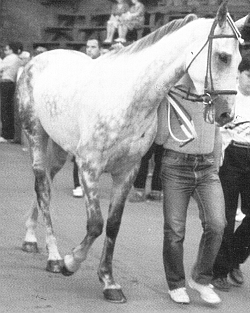

|
AMORE
Corsi 7, vinti nessuno
anno di nascita: 1976
Si trattò di uno dei cavalli su cui permase il dubbio circa la sua effettiva potenzialità di
vincere un Palio. Corse per un quadriennio dal luglio 1985 al luglio 1988, saltando solo un Palio (agosto
1987). Non fu mai scartato, e il suo miglior tempo lo ottennne nel Palio del suo debutto durante la
batteria di recupero con il Coghe: 1.19. Furono principalmente tre i Palii in cui si pose all’attenzione
della Piazza: nell’agosto 1985 con il Casula; nel luglio 1986, magistralmente condotto da Cianchino; nel
settembre 1986, quando solo un ingresso troppo focoso con Truciolo al Casato lo portò a sbattere nel
colonnino. Dei tre, fu indubbiamente quello corso con Cianchino nell’Onda il Palio in cui Amore sfiorò
veramente la vittoria. La sua problematica ferratura agli anteriori ne compromise inevitabilmente le
qualità, pur essendo un soggetto ben preparato, sin dall’inizio, per correre sul tufo.

ALTRI CAPITOLI INERENTI A QUESTO ARGOMENTO:
Proprietari dei cavalli vittoriosi
I cavalli dal 1945 al 1999
I cappotti dei cavalli
I cavalli vincenti del Novecento
I cavalli vittoriosi all'esordio
Per tornare all'indice delle foto
|